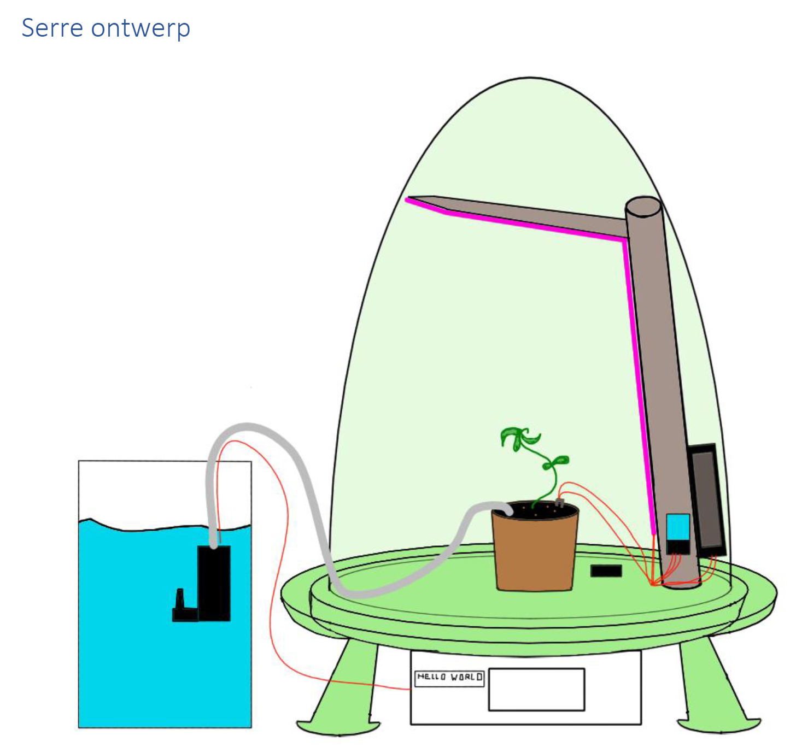
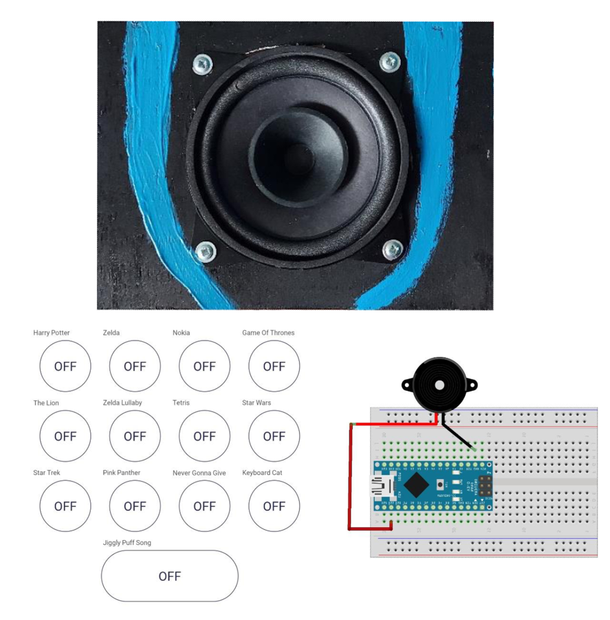

Portfolio Website
Dit is een website die mijn portfolio weergeeft. Hier laat ik mijn skils en werkervaring zien.
Smart planter
Dit is een project dat ik had genaakt voor IoT. Dit is een smart planter die automatisch watert, verwarmt, of afkoelt. Ook zijn er meerdere presets die gemaklijk in te stellen zijn voor optimaal verzorging. deze heeft ook een online tracker van data.
Jukebox
Dit is een project dat ik had genaakt voor IoT. Dit is een buzer dat tunes afspeeld dat bestuurbaar is van op de telfoon. Ik gebruikte hiervoor een simple buzzer, een ESP32 en de Blynk app. Er zijn momenteel verschilende tunes beschikbaar zoals de teamsong van Harry Potter,Star Wars,Zelda, Star Trek en nog een aantal anderen.
